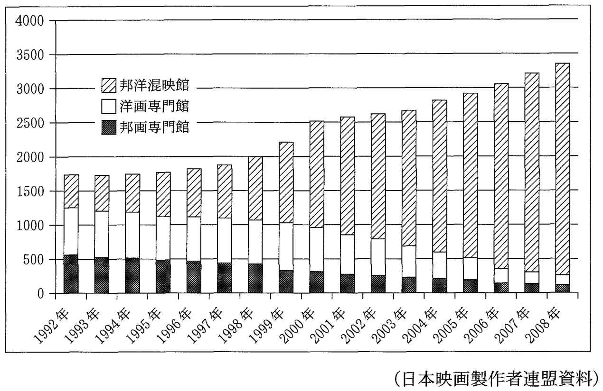

| 大学入試 自由英作文問題 モデル解答集 ＜第2集＞ 改訂版 | |
| 塩川 春彦 | |
| (2017) | |
塩 川 春 彦
帝京科学大学医療科学部（千住キャンパス）教授。
1990年代より、文科省検定済英語教科書Unicorn シリーズ（文英堂）の執筆に携わっている。特に、旧指導要領下の「ライティング」、現指導要領下の「英語表現」では、中心執筆者を務めている。
教科書執筆者としては、「良質な教科書」「結果として入試にも役立つ教科書」を目指していたので、大学入試における自由英作文に注目してきた。
また、"高校生のライティング能力をどのように伸ばすべきか"という問題意識は当然持っていたので、自由英作文問題対策の参考書にも目を配ってきた。
「こんな対策本があってもよいのではないか」と思い立って執筆したのが本書である。
その他の主な著書
『英語が使える日本人の育成』（共著、三省堂）
『Interface―ビジネス英文メール入門』
（マクミランランゲージハウス）
『Introduction to MBA English―英語で学ぶ経営学の基礎』
（マクミランランゲージハウス）
『英文ライティング・日英翻訳ベーシックコース』
（DHC総合教育研究所）
The Real World Today（桐原書店）
20 STEPS TO CRITICAL WRITING（共著、桐原書店）
本書は、大学入試における自由英作文問題の典型的な論題群と、それらに対する解答例を提示している。本書の対象は、"志望校の読解問題だけでも確実に合格水準の得点をし、加えて英作文問題で得点を上乗せしたい"という意欲のある受験生である。
本書には、他の自由英作文問題対策参考書に見られない特徴がある。それは、解説を最小限に抑え、受験生には、限られた時間にできるだけ多くの解答例を読むことに集中してほしいという意図を持っていることである。このような意図を持った書籍があってもよいだろうと思ったことが、本書を出版しようと思い立った動機である。
以下に、本書のねらいについて説明する。
本書のねらい
1 自由英作文のための知識の基盤をつくる
本書を読み通すことにより、自由英作文の典型的な諸論題について、"こんな論題にはこういう論点があり、こういう英語表現を用い、このように論理を展開すればよい"という、基本的知識の基盤が形成されるはずである。
ここで言う「基本的知識の基盤」が意味することを具体的に説明したい。本書の解答例の中に出てくる単語やイディオムは、英語を書く際に"使える"語彙である。また、本書の解答例は基本的に、"主題文―支持文―結語"という英語の文章の基本的な構成法にしたがっているので、読み通すことで文章の構成パターンも身につく。さらに、典型的論題群の解答例を読み通して得た知識を組み合わせることによって、他の様々な論題に対応することが可能となるのである。このことは、実際に本書の各章の解答例の後に掲載した「類似論題」「関連論題」の項目を参照し、確かめてほしい。
2 アウトプットの前にインプットを
先に「多くの解答例を読むことに集中してほしい」と書いた。このことの意味を、次に説明したい。ライティングの力を伸ばすためには、"書いて添削してもらうこと"を繰り返す必要があるとされている。それはその通りである。しかし、社会問題の知識も乏しく、ライティングのために"使える"語彙力も貧しく、英語の文章の構成法をきちんと学んでいない学習者が書いた英作文には、せいぜい文法の誤りを添削することくらいしかできない。結局、手本を提示し、「このように書きなさい」となるのである。
やみくもに英作文する前に、"ライティングの手本になる英文"をたくさん読んだ方がよい。一定量以上の良質のインプットがなければ、良いアウトプットはあり得ないのである。ただし、入試の読解問題の英文、進学校で使われる読解用テキストの英文の多くは、受験生にとって"ライティングの手本になる英文"ではない。使われている単語が難しかったり，構文が複雑だったり、書き手の個性が強く出た文体であったりするからである。本書では、日本人学習者にとっての"ライティングの手本になる英文"を提示しているつもりである。
3 日本語訳から英文再現へ
本書では、後半部分に解答例の日本語訳を掲載している。これらの日本語訳から英文を再現する練習を通して、本書で学んだ知識を血肉化してほしい。
本書は、まず、4巻シリーズとして出版するが、巻を重ねてできるだけ多くの論題に対する解答例を提示していきたいと考えている。本シリーズが受験生のライティング力向上に役立つことを切に願っている。
2016年11月
著者しるす
本書における論題の選定の元になっているのは、著者が作成した過去20年余りの国公立大学の自由英作文問題のデータベースである。本書で取り上げた論題ごとに、他大学で出題された同一論題や類似論題に関する情報を付記しているが、それらは、このデータベースに基づいている。
このデータベースにより、「頻出論題」群も把握でき、「小学校の英語教育の是非」に代表される頻出論題群は当然に取り上げている。
論題選定の基準とデータベース
しかし、論題選定の基準は、"頻出かどうか"だけではない。環境・資源、政治、経済、社会、教育、科学、医療・医学などの分野にまたがる論題群、「尊敬する人」のような信条・好みを書かせる論題群などを概観し、バランスを重視して、本書掲載の論題を選定している。それは、「まえがき」でも述べたように、本書を通して、自由英作文のための「知識の基盤」となるものを提供したいからである。バランスのとれた論題の選定のためにも、このデータベースが貢献している。
本書における論題選定は、著者の気まぐれや好みでなされているわけではないことを強調しておきたい。
各章の構成
・論題
・解答例
・英文の構成
解答例の英文のアウトラインを示す
・過去20年のデータ分析
国公立大学入試における過去20年余りの出題実績データから、同一論題、類似論題、関連論題をピックアップ、本書が示す解答例の応用範囲を示す
[社会～成人年齢]
世界の多くの国では、18歳になると成人と見なされる。日本の法律では、20歳を迎えて初めて成人と見なされる。この法律を改定すべきか。200語程度の英語で、改定に賛成か反対か、あなたの立場を明確にし、その理由を述べよ。
（琉球大学）
＊解答例は次ページに掲載
法的成人年齢を18歳に引き下げるべきか
解答例
In Japan, the legal adult age is still set as 20 although the voting age was lowered to 18 recently. I think the adult age should also be 18. I will state my reasons in this essay.
I think an adult mainly means two things. One, a legal adult has the right to vote. Two, a legal adult has to take responsibility if the person commits a crime.
As for the voting age, people aged 18 and 19 were given the right to vote, which makes them aware of their responsibility as participants in a democratic society. In this sense, they are already treated as adults. As for legal responsibilities, people aged 18 and 19 should take responsibilities when they break the law, rather than being protected as "immature minors." It should be noted that some serious crimes are committed by people of those ages. As a matter of fact, most countries in the world set the adult age at 18.
Some people may be worried about 18-year-olds buying tobacco and alcohol. However, if children are raised properly, they will grow up to make good decisions.
As discussed above, I believe the legal adult age should be lowered to 18. (200 words)
＊英文の構成は次ページに掲載
英文の構成
序 論： ＜メインアイデアの提示＞
成人年齢は18歳であるべき
本 論： ＜メインアイデアを支持する論述＞
(1)（議論の前提となる）「大人」の定義の提示
(2) 投票権が与えられた18歳、19歳の人々は、法的責任も負うべき
(3) タバコやアルコールに関しての懸念と反論
結 論：
メインアイデアの確認
法的成人年齢を18歳に引き下げるべきか
過去20年のデータ分析
同一論題を出題した大学
一橋大学など6大学
関連論題
「選挙年齢を18歳にした（する）ことの是非」（東京大学など8大学） / 「大人の定義」（名古屋市立大学など4大学）
[社会～教育・学習]
「ギャップ・イヤー」(a gap year)とは，大学への入学を認められた学生が，通例では1年ほど入学を遅らせて，その間に外国での生活・ボランティア活動・職業体験などを通して，いわゆる「自分探し」をする期間，または制度のことを指します．この制度の是非についてあなたの考えを100語程度の英語で書きなさい．
（広島大学）
ギャップ・イヤーの是非
解答例
I strongly support the idea of "a gap year." In Japan, university-track high school students work very hard to pass university entrance examinations. A gap year would give them free time to do many kinds of things; such as work, travel abroad, or do volunteer activities. These opportunities would function as a period for them to stop and think, see the world, and discover what they are and what they want to do with their life. Once you get to college, usually it is difficult to have such a long "vacation." It would be really meaningful to have a gap year between high school and university. (105 words)
＊英文の構成は次ページに掲載
英文の構成
主題文：
「ギャップ・イヤー」を強く支持する
支持文： ＜理由の列挙＞
・懸命に勉強してきた高校生に、様々なことをする自由時間を与える
・働く、旅行する、など
・これらの機会は、立ち止まって考え、自分を発見する期間となる
・大学入学後は、そのような長い「休暇」を持てない
結 語：
ギャップ・イヤーがあることは、意義深い
ギャップ・イヤーの是非
過去20年間のデータ分析
同一論題を出題した大学
東京外国語大学など7大学
[社会～高齢化社会、移民政策]
2055年には、日本における現役世代（20歳～64歳）と高齢者（65歳以上）の人口比率は1.2:1になると推計されている。少子高齢化がこのまま進めば、あなたが将来退職するときには、十分な年金がもらえないかもしれないし、退職したくてもできない状況にあるかもしれない。少子高齢化がもたらすこのような問題を解決し、日本の生産力を維持して年金を保証するためには、受け入れる移民の数を増やすべきだという意見もある。この意見にあなたは賛成か反対か。根拠を明示し、自分の将来と関連づけて、200語程度の英語で述べよ。
移民 immigrant / 少子高齢化 declining birthrate and aging population / 生産力 manufacturing power / 年金 pension / 退職する retire
（琉球大学）
＊解答例は次ページに掲載
少子高齢化対策として移民を多く受け入れるべきか
解答例
Japan has been reluctant to accept immigrants, but it should allow a lot more foreigners into the country and allow them to become citizens. By accepting more immigrants, Japan can solve some serious problems caused by its declining birth rate and rapidly aging population. The reasons are as follows.
First, we are already experiencing shortages of nurses and professional caregivers, although there are many people who need to be cared for. In other major nations, a lot of immigrants are working as nurses or professional caregivers. We should follow those examples. Second, if Japan continues to be an aged society, there will not be enough working people to support retired people with adequate pensions. Also, we will not be able to maintain our health insurance system and social welfare system. Immigrants will be a strong workforce. Finally, if Japan wants to maintain its industries and commercial activities, it also needs a sufficient number of consumers. Immigrants will contribute to keeping our economy going as consumers, too.
In conclusion, Japan should allow a lot more young immigrants to work and live in Japan. In 2055, I will be 58 years old. I don't want to be a person who is not able to receive proper medical care and other benefits. (208 words)
＊英文の構成は次ページに掲載
英文の構成
序 論： ＜メインアイデアの提示＞
今より格段に多い外国人を受け入れるべき
本 論： ＜理由の列挙＞
(1) 看護師と介護士が不足している
(2) 退職した人々を支えていくために十分な数の勤労者がいなくなる
(3) 健康保険制度や福祉制度を維持していくこともできない
(4) 移民は、強力な労働力になる
(5) 移民は、我々の経済に消費者としても貢献する
結 論：
メインアイデアの再提示
少子高齢化対策として移民を多く受け入れるべきか
過去20年のデータ分析
同一論題を出題した大学
国際教養大学など4大学
類似論題
少子高齢化の原因、影響、対策のいずれかをテーマにした論題は、広島大学、北海道大学など19大学から出題されている。
関連論題
「日本はより多くの外国人労働者を受け入れるべきか」「移民を社会の中でどう扱うべきか」（一橋大学など）
[社会～言語・コミュニケーション]
以下の記事に報道されている新しい動きについて、あなたの意見を150語程度の英文で述べなさい．
Uniqlo to use English as their official language in 2012
Fast Retailing Co., which operates the Uniqlo casual clothing chain, will start using English for business meetings in 2012, the company said Thursday.
（茨城大学）
＊解答例は次ページに掲載
英語を社内公用語にする企業についての賛否
解答例
I don't agree with Uniqlo's decision to use English during all of their business meetings. First, if this company truly uses English as their official in-house language, it will hire more native and near-native speakers of English in future. This means that, proportionally, a smaller number of Japanese people will be hired. Do we have to accept a future in which Japanese companies will not eagerly hire Japanese people? Second, there is no reason why the company should force their employees to speak English in their own meetings. It is almost as if the company is asking them to throw away their own culture. Third, some sections of this company are doing business only in Japan. Certainly, in order to do business in today's global market, a company must have employees who speak different languages. However, it does not mean that all the employees have to speak English in their meetings. (150 words)
＊英文の構成は次ページに掲載
英文の構成
主題文：
会議で英語を使うという決定に賛成できない
本 論：＜理由の列挙＞
（理由1）英語母語話者を多く雇うようになり、日本人の雇用が減る
（理由2）英語を話すことを強制することは、自らの文化を捨てさせること
（理由3）日本でのみ業務を遂行する部門もあり、全社員が英語を話せる必要はない
英語を社内公用語にする企業についての賛否
過去20年のデータ分析
同一論題を出題した大学
公立はこだて大学
類似論題
「英語を公用語にすべきか」（群馬大学）
関連論題
「将来だれにも英語が必要になるか」（福島大学）
[信条・好み～教育・学習、言語]
大学入学後、あなたは英語以外に外国語を学びたいと思いますか。あるいは英語だけで十分だと思いますか。その理由を100語程度の英語で述べなさい。
（京都教育大）
＊解答例は次ページに掲載
学びたい第2外国語
解答例（128語。[ ]内を省略すれば、108語）
I would like to study Spanish and Chinese in addition to English. The main reason is that these two languages have a large number of native speakers. Spanish is spoken in Spain, Mexico, and most countries in South America. Chinese is spoken in China, Taiwan, and many East Asian countries, such as Singapore. The more languages you speak, the more people you can communicate with. If I could speak these two languages in addition to English, I would have no problem with languages in most parts of the world and enjoy traveling and communicating with the people living there. [I would even have an opportunity to work for an international corporation or organization that requires its workers to speak any of the foreign languages I mentioned.]
＊英文の構成は次ページに掲載
英文の構成
主題文：
スペイン語と中国語を学びたい
支持文： ＜理由の列挙＞
・これらの２つの言語は、多くの母語話者を持つ
・より多くの言語を話せれば、より多くの人々とコミュニケーションができる
・世界のほとんどの場所で、言葉では困らない
・国際的な企業や機関で働く機会もありうる
＜編者注＞ この解答例は、「第2外国語を必修にすべきか」というような論題（電気通信大学などで出題）にも応用できるように作成した。逆に言うと、この論題に対して「イタリアが好きなのでイタリア語を学びたい」というような個人的な思いや好みを書いて練習することは、応用可能性という点で得策ではない。
学びたい第2外国語
過去20年のデータ分析
同一論題を出題した大学
京都教育大学など7大学
類似論題
「第2外国語学習の意義」「第2外国語を必修にすべきか」（一橋大学など5大学で6回）
[社会～医療・医学]
Many rural areas are now short of trained doctors and medical staff. Do you agree that newly graduated doctors from this university should be sent to rural areas in Shizuoka prefecture for several years of compulsory service before being allowed to practice freely? ＜At least 150 words＞
（浜松医科大学）
＊解答例は次ページに掲載
若手医師の地方勤務を義務づけるべきか
解答例
Japan's number of doctors per population is much smaller than that of other advanced nations. To make matters worse, many doctors prefer to work in a major city. As a result, in Japan, there are serious shortages of doctors in areas that are far from the major cities.
This problem needs to be solved as soon as possible. Therefore, the proposal of sending newly graduated doctors to rural areas for several years is a practical solution. Doctors in their mid-30s and 40s tend to avoid working in rural areas because many of them want their children to receive a better education. If some doctors are required to work in a rural area as a compulsory service, young newly graduated doctors are more suitable than older doctors. Some of the young doctors may say that they have the freedom to choose where they want to live. However, they need to remember that a lot of tax money is spent training medical students to become doctors. (164 words)
＊英文の構成は次ページに掲載
英文の構成
第1パラグラフ
＜地方での医師不足の原因の概説＞
第2パラグラフ
主題文：
新卒の医師たちを数年間地方に送るという提案は現実的な解決法
支持文： ＜理由の論述＞
・30歳代、40歳代の医師たちは、自分の子どもの教育を考え、地方で働くことを避ける
・したがって、義務として地方で働くとしたら、若い医師たちがよりふさわしい
（反論と再反論）居住地を選ぶ自由があると言う医師たちもいるだろうが、医師を養成するために多額の税金が使われていることを思い起こす必要がある
若手医師の地方勤務を義務づけるべきか
過去20年のデータ分析
関連論題
「医師の義務」「自分の医師としての将来像」（浜松医科大学）
[医療・医学～医師]
Are there any situations where doctors should lie to their patients or hide the truth? Write your answer in English. ＜At least 150 words＞
（旭川医科大学）
＊解答例は次ページに掲載
医師はどんな時でも嘘を言ってはいけないか
解答例
In my opinion, doctors should not lie to their patients or hide the truth in any case. Even if the truth is scary, doctors should reveal all they know about the disease to their patients.
This has various benefits. For example, if patients are sufficiently informed of the exact nature of the disease and its therapy, they could choose proper medical treatment. This means that patients could also seek second opinions or try alternative therapies. Things like these are not realized if patients don't know what is wrong with them. Also, even if the disease is incurable such as some types of cancer, the patients have the right to know the truth.
Although the truth is bitter, the patients can get a chance to plan their final days in a meaningful way. For a patient, sometimes "the best treatment" is to let the patient continue a fulfilling life for as long as possible.
In conclusion, telling the truth allows patients to be responsible for their own lives. (167 words)
＊英文の構成は次ページに掲載
英文の構成
序 論： ＜メインアイデアの提示＞
医師はどのような場合でも、患者に嘘を言ってはならない
本 論： ＜患者にとっての有益性の列挙＞
（有益性1）病気や治療法について十分に知っていれば、適切な治療法を選択でき、セカンドオピニオンや代替治療を探ることもできる
（有益性2）病気が治せないものだとしても、最後の日々を意義深く計画する機会を得ることができ、充実した生活をできるだけ長く続けさせられる
結 論：
真実を語ることは、患者が自身の人生に責任を持つことを可能にする
医師はどんな時でも嘘を言ってはいけないか
過去20年のデータ分析
類似論題
「医療における嘘について」「プラシーボ効果」「うそは常に悪いか」（大阪大学など3大学）
関連論題
「医師の義務」（浜松医科大学）
[体験～震災]
In 2011 the terrible earthquake and tsunami in Tohoku shocked the world. How has this shocking event changed your thinking? Choose one point ― for example, about nuclear power, etc. ― and explain how your thinking changed. ＜About 70 words＞
（岩手大学）
＊解答例は次ページに掲載
東日本大震災はあなたの考え方をどのように変えたか
解答例
The disastrous nuclear accident caused by the Great East Japan Earthquake completely changed my thinking about nuclear power. Before the accident, I had believed that nuclear power stations were safe enough. However, now I know how dangerous nuclear power plants are. A wide area of Fukushima is now completely unlivable because of radioactive pollution. The troubled nuclear power plant is still polluting the environment, causing people's health problems. Now I do think we should abandon nuclear power. (77 words)
＊英文の構成は次ページに掲載
英文の構成
主題文：
東日本大震災での原発事故は、原子力についての考えを完全に変えた
支持文： ＜事故前と事故後の認識の違いを記述＞
（事故前）原発は十分に安全だと思っていた
（事故後）原発の危険性が分かった―人々の健康、環境への害
結 語：
原発を廃棄すべき
東日本大震災はあなたの考え方をどのように変えたか
過去20年のデータ分析
類似の論題
「大震災がもたらした環境問題」（熊本県立大学）/ 「脱原発への賛否」（京都府立医科大学など4大学）
「災害への備え」など、災害に関連した論題を出題した大学は、一橋大学、浜松医科大学など5大学ある。
[社会～ジェンダー]
次の問いに150語程度の英語で答えなさい．
Men and women have equal opportunities in Japanese society. Do you agree or disagree?
（長崎大学）
＊解答例は次ページに掲載
男女が平等の機会を与えられているか
解答例
In theory, men and women have equal opportunities in Japanese society. However, in practice, I don't think women have the same opportunities as men. First of all, if you compare the labor participation rates of men and women, you will understand I am right. Women's participation rates in the workforce become lower in the age groups between 30 and 44. This trend is not seen in other advanced nations. This is because Japan does not provide public facilities and services to make it easier for women to balance work and home. Women are forced to take on most of the responsibilities of housework and child care. Second, the above-mentioned fact prevents women from participating in politics, too. Actually, Japanese society has very few female politicians. As a result, the Japanese central and local governments are slow in promoting women's social advancement. After all, Japan is a developing country in terms of gender equality. (153 words)
＊英文の構成は次ページに掲載
英文の構成
主題文：
日本では、建前では男女機会均等だが、実際はそうではない
支持文：
（具体例1）女性の労働参加率は30歳から44歳の間で低くなる
（具体例2）女性の政治家がとても少ない
結 語：
男女平等に関して日本は後進国
男女が平等の機会を与えられているか
過去20年のデータ分析
ほぼ同一の論題を出題した大学
一橋大学
類似論題
「女性の労働参加率」（小樽商科大学など）
関連論題
「家事分担について」「男性優位の職場への女性の進出」「ジェンダーステレオタイプについて」（北海道大学など）
[社会～環境・資源]
以下の①～⑧の熱帯雨林に関する情報を４点以上用い，指定されたトピック・センテンスに続けて，8～10文程度の英語のパラグラフを完成させなさい．
Oxygen production:
①地球の酸素のおよそ40％は熱帯雨林でつくられる．
②アマゾン河流域(the Amazon)は「地球の肺(lungs of the Earth)」と呼ばれている．
Biodiversity:
③熱帯雨林には，ほかの森林よりも多種類の樹木が存在する．
④世界中の動植物および昆虫の種類のうち半数が熱帯雨林に棲息する．
Medicine:
⑤全薬品のほぼ４分の１は熱帯雨林の植物を原料としている．
⑥1,400以上の熱帯雨林植物が将来的に薬品の原料となりうると考えられている．
Habitat (home):
⑦数千種の鳥，動物，昆虫の生息地．
⑧アマゾン河流域にかつて1,000万人いた先住民は，今ではわずか20万人にすぎない．
トピック・センテンス
Preserving the world's rainforests is important for a number of reasons.
（静岡県立大学）
＊解答例は次ページに掲載
熱帯雨林の役割
解答例
Preserving the world's rainforests is important for a number of reasons. First, and most importantly, rainforests produce about 40 percent of the Earth's oxygen. As a matter of fact, the Amazon is called the "lungs of the Earth." Second, rainforests have great biodiversity. There are many more species of trees than in usual forests. Also, half of the Earth's animal, plant, and insect species live in rainforests. Third, rainforests provide humans with ingredients for medicines. About a quarter of the medicines humans rely on are made from many plants found in rainforests. There are potentially over 1,400 species of plants that could be made into medicines. Lastly, rainforests are habitats for thousands of species of birds, animals, and insects. Rainforests are also habitats for people. For example, in the Amazon, there were ten million native people living there, but there are only two hundred thousand now. Preserving rainforests is essential for the survival of humankind. (155 words)
＊英文の構成は次ページに掲載
英文の構成
問題文で提示されたことの全てを、提示された順番に記述している。
＜編者注＞ この解答例は、「関心のある環境問題について書く」（愛知教育大学など）のような論題に適用できる。熱帯雨林に特化した論題を出題した大学はこの大学以外に見当たらないのであるが、この解答例は熱帯雨林の存在意義についてコンパクトにまとめたものなので、頭に入れておいて損はない。
熱帯雨林の役割
過去20年のデータ分析
関連論題
環境・資源問題をテーマにした論題は、40以上の大学から計50回以上出題されている。それらのうち3分の1は、「省エネ・省資源のためにできることの具体例」（一橋大学ほか）という頻出論題で、解答例は本書＜第1集＞に収録している。
[社会～科学技術、宇宙研究]
Write 120 to 150 words of English about the topic below.
The exploration of space is a waste of money.
（一橋大学）
＊解答例は次ページに掲載
宇宙探査は金の無駄使いか
解答例
Spending money on space exploration in general is not necessarily a waste of money. Some may argue that the money spent for space exploration could be used to solve urgent problems on Earth, such as poverty and hunger. It may be true. However, the world's total spending for space exploration is less than 3 percent of the world's total military spending.
Nevertheless, if we look at manned space exploration and unmanned space exploration separately, manned space exploration is a waste of money. The reason is as follows. First, launching a manned spacecraft costs about four times as much money as to launch an unmanned spacecraft. Despite that, scientific data collected by human spacecrafts can be collected by robotic spacecrafts, too. Rather, in the history of astronomy, the greatest achievements have always been done with unmanned exploration using the Hubble Space Telescope, Mars rovers, and so on. (144 words)
＊英文の構成は次ページに掲載
英文の構成
第1パラグラフ
主題文：
宇宙探査は、必ずしも金の無駄使いではない
主題文： ＜反論と再反論＞
（反論）宇宙探査のための金は、地球上の問題を解決するために使われるべき
（再反論）しかし、世界の宇宙探査支出は、世界の軍事支出の3パーセント以下だ
第2パラグラフ
主題文：
そうは言っても、有人宇宙探査は金の無駄使いだ
支持文： ＜理由の列挙＞
（理由1）有人宇宙船を打ち上げる費用は、無人宇宙船の4倍
（理由2）有人宇宙船によって得られる科学的データは、ロボット的宇宙船によっても得られる
（理由3）天文学の最も偉大な諸成果は、いつも無人探査でなされてきた
宇宙探査は金の無駄使いか
過去20年のデータ分析
同一論題を出題した大学
電気通信大学など3大学
類似論題
「宇宙研究の意義」（埼玉大学）
[社会～情報技術、メディア、環境資源]
Do you think newspaper companies should stop printing on paper and use only the Internet? Why or why not? ＜About 100 words＞
（電気通信大学）
＊解答例は次ページに掲載
新聞は紙への印刷をやめてネットでのみ発行すべきか
解答例
I do think that newspaper companies should stop printing on paper and use only the Internet. If they stop printing on paper, it will have many beneficial effects on our society. The most beneficial effect is that the paper used for newspapers will not be needed. Certainly, newspapers are printed on recycled paper, which can recycle again. However, recycled paper is also a precious resource and should not be wasted. Decreasing paper consumption helps preserve forests. Another positive effect is that it will eliminate the need for energy and resources for printing and transporting newspapers. In conclusion, by stopping printing, newspaper companies will be eco-friendly. (107 words)
＊英文の構成は次ページに掲載
英文の構成
主題文：
新聞社は紙への印刷をやめてネットだけを利用すべき
支持文：
（理由1）新聞紙のための紙の消費をなくせる
（理由2）新聞を印刷、輸送するためのエネルギー、資源を不要にする
結 語：
印刷をやめることで新聞社は環境にやさしくなる
新聞は紙への印刷をやめてネットでのみ発行すべきか
過去20年のデータ分析
類似論題
「ネットがあるので新聞は不要か」（宮城教育大学）
関連論題
「将来のIT社会」（公立はこだて未来大学） / 「ネット時代における印刷媒体」（旭川医科大学）
[社会～教育・学習、大学]
大学のような高等教育機関において，専門科目に特化するだけでなく，教養科目も学ぶ意義に関して，本文での議論を踏まえつつ，あなたの考えを述べなさい。＜100－130語＞
（新潟大学・改題）
＜編者注＞ この問題は、大学教育の在り方について論じた英文の読解問題のあとに与えられており、日本語で答えることが求められていた。しかし、自由英作文の論題として今後どこかの大学で出題されても不思議はないので、自由英作文の論題として本書では扱い、解答例を作成した。
＊解答例は次ページに掲載
教養教育の意義
解答例
Some people insist that university education should put more emphasis on specific technical knowledge than on the humanities, such as history and literature. However, I don't agree with their opinion. They say that the modern world is highly industrialized and social innovation is driven by new technologies. Yet, innovation is not simply based on technology, but also on a better understanding of how people and societies work and what they want. In this sense, the humanities and other general education subjects covering social and natural sciences are important, because they help students gain a wider perspective on various aspects of the world. Such a wide knowledge base enables people to correspond to new changes. Higher education should not narrow its programs to teaching specific technical skills only. (127 words)
＊英文の構成は次ページに掲載
英文の構成
主題文：
大学では人文科目よりは技術教育に重点を置け、という意見には賛成できない
支持文： ＜理由の列挙＞
・社会的革新は、新しい技術だけでなく、人間および社会への深い理解によって牽引される。
・だから、人文科学と他の教養教育科目は重要
・それらの科目は、世界の様々な局面について、より幅広い展望を学生たちに与える
・幅広い知識の基盤は、人々に新しい変化へ対応することを可能にさせる
結 語：
高等教育は専門的な技術的能力に狭められるべきでない
過去20年のデータ分析
類似論題
「STEM科目(science, technology, engineering, mathematics)の意義」（公立はこだて未来大学）
関連論題
「教育の目的は職業を得るためか」（一橋大学）
[社会～スポーツ]
Write 120-150 words of English about the following topic.
The Olympics encourage nationalism rather than international friendship.
（一橋大学）
＊解答例は次ページに掲載
オリンピックが促進するのは国際親善か、ナショナリズムか
解答例
Nationalism is a love for your own country and a strong belief that it is better than other countries. The Olympics surely encourage nationalism. Once the Olympic Games begin, many Japanese people watch the Japanese athletes on TV, even if they don't show any interest in sports in their ordinary life. People feel happy when their national team wins and disappointed when it loses. It should be called "irrational loyalty to community" because there is no logic. The sentiment easily goes beyond loyalty into nationalism.
The Olympics have functioned as a means to boost nationalism, as shown by the example of the Berlin Olympics in Nazi Germany. As discussed above, nationalism includes a strong belief that your own country is better than other countries. Therefore, it is clear that nationalism does not contribute to international friendship. In conclusion, the Olympics encourage nationalism rather than international friendship. (146 words)
＊英文の構成は次ページに掲載
英文の構成
第1パラグラフ
導入文：（ナショナリズムの定義）
ナショナリズムは、自国への愛情、および自国の優越性への信念
主題文：
オリンピックはナショナリズムを促進する
支持文： ＜理由の論述＞
人々の自国選手への応援は、「共同体への不合理な忠誠心」
結 語：
その感情はナショナリズムに行き着く
第2パラグラフ
主題文：
オリンピックは、ナショナリズムを高揚するために機能してきた
支持文： ＜ナショナリズムの問題点の論述＞
・ナショナリズムは、自国が他国より優れているという強い信念を含んでいる
・それゆえに、ナショナリズムは国際親善に貢献しない
結 語：
オリンピックは、国際親善よりはナショナリズムを促進する
オリンピックが促進するのは国際親善か、ナショナリズムか
過去20年のデータ分析
類似論題
「オリンピックを国際親善のためのイベントにするにはどうすればよいか」（国際教養大学）
関連論題
「2020東京オリンピック開催の是非」「オリンピック開催費用に公的資金を用いることの是非」「オリンピックの開催地はどこがよいか」（秋田大学など）
[図表・統計解釈～社会、文化・娯楽]
次のグラフは，日本の映画館の数の推移を示しています。全体的な推移，邦洋混映館(邦画と洋画を上映する映画館)，洋画専門館，邦画専門館の推移など，このグラフが示す特徴を簡潔に90語程度の英語で書きなさい。
（広島大学）
＊グラフは次ページに掲載
＊解答例はグラフの後に掲載

日本の映画館数の推移
解答例
This graph shows the changes in the number of movie theaters in Japan. Between 1992 and 1997, the total number of movie theaters continued to be around 1,700. It began to increase in 1998 and reached nearly 3,500 in 2008, twice as many as that in 1992. Meanwhile, the number of theaters which showed both Japanese and foreign films began to increase greatly in 1999. It reached about 3,050 in 2008. This means that the other two types of theaters -- "Japanese films only" and "foreign films only" -- became very unusual. (90 words)
＊英文の構成は次ページに掲載
英文の構成
主題文：
このグラフは、日本の映画館の数の推移を示す
支持文：
(1) 1997年から1997年までの変化
(2) 1998年から2008年までの変化
(3) 1999年から2008年までの業態の変化
日本の映画館数の推移
過去20年のデータ分析
関連論題
「好きな映画」「映画館かDVDか」（静岡大学など6大学）
[信条・好み]
Describe one historical person you admire, explaining the reasons for your admiration. ＜120-150 words＞
（一橋大学）
Who do you respect most? Why?＜About 100 words＞
（福島大学）
＊解答例は次ページに掲載
尊敬する人
解答例 （129語、[ ]内を省略すれば、99語）
One of the historical persons that I admire most is Nelson Mandela. Mandela dedicated his life to the fight against the racial discrimination system that South Africa used to have. [I learned about him by reading his autobiography,Long Walk to Freedom.] In South Africa, black people's fundamental human rights used to be denied under the policy called apartheid. Mandela, in his 30s, was arrested for his struggle against apartheid and then spent 27 years in prison. However, he never gave in. Finally, the South African government abolished apartheid in the early 1990's and Mandela became the first black president of that country. [As president, he emphasized reconciliation between racial groups and made efforts to reduce poverty and expand healthcare services.] I admire his never-give-up spirit and fearless leadership.
＊英文の構成は次ページに掲載
英文の構成
主題文：
最も尊敬するのはネルソン・マンデラである
支持文： ＜マンデラについての概説＞
・マンデラは、人種差別制度であるアパルトヘイトとの闘いに生涯を捧げた
・彼について、彼の自伝『自由への長い道』で学んだ。
・南アフリカでは、かつて、黒人の基本的人権が否定されていた
・マンデラは反アパルトヘイト闘争のゆえに27年間獄中で過ごしたが、屈しなかった。
・ついに、アパルトヘイトは廃止され、マンデラは最初の黒人大統領となった。
・大統領として、彼は、人種間の和解や、貧困対策などに努力
結 語：
私は、彼の不屈の精神と恐れを知らない指導力を称賛する。
＜編者注＞ この解答例は、「感銘を受けた本」（福岡教育大学ほか）のような論題にも適用できるように、マンデラの自伝にも言及している。また、マンデラ自伝は映画化されているので、「好きな映画」（香川大ほか）という論題にも適用できる。加えて、「影響を与えられた体験」（茨城大学など4大学）にも、"自伝を読み影響を受けた"という記述にすれば、応用できる。自伝または映画版DVDを「心に残る贈り物」（大阪大学など5大学）の解答にすることもできる。さらに、「タイムトラベルができたらいつの時代のどこに行きたいか」（一橋大学ほか）にも、"マンデラを見たい"と論述すれば、応用できる。
尊敬する人
過去20年のデータ分析
同一論題
東京芸術大学、秋田県立大学
類似論題
「自分の人生に影響を与えた人（体験）」（茨城大学など4大学）
[信条・好み]
"Look before you leap"と"He who hesitates is lost"という，内容の相反することわざがある。どのように相反するか説明したうえで，あなたにとってどちらがよい助言と思われるか，理由とともに答えよ。＜60－80語＞
（東京大学）
＊解答例は次ページに掲載
熟慮か即決か
解答１（熟慮が良い）
The first proverb advises you to think carefully about the possible results of your action before doing something, while the second one tells you that you will lose an important chance if you don't act quickly. To me, the first piece of advice seems better because I am a careless person and often make wrong decisions. I know that hesitating too much will get me nowhere. However, if I considered situations more carefully, I could make fewer mistakes. (78 words)
＊英文の構成は次ページに掲載
英文の構成
導入文：
一つは熟慮を勧め、もう一つは即決を勧めている
主題文：
自分は軽はずみな人間なので、熟慮が良い
支持文： ＜理由の論述＞
・躊躇しすぎては何も得られないだろうが、熟慮は間違いを減らす
＊次ページに解答例2を掲載
熟慮か即決か
解答2（即決が良い）
The first saying means that you should stop to think before taking some action while the second one tells you that nothing will change if you do not start action. As a person who often thinks too much and misses opportunities, I like to take the advice of the second one. Certainly, a quick decision may be careless and a wrong choice. However, I remind myself that I should take risks if I want to achieve something. (77 words)
＊英文の構成は次ページに掲載
英文の構成
導入文：
一つは熟慮を勧め、もう一つは即決を勧めている
主題文：
自分は考えすぎて機会を失うことが多いので、即決がよい
支持文： ＜理由の論述＞
即決は不注意で間違っているかもしれないが、何かを得たいならリスクをとるべき
＜編者注＞ これらの解答例は、「自分の性格」「自分の性格で変えたい部分」「自分の長所短所」（新潟大学など5大学から出題）のような論題に応用できる。
熟慮か即決か
過去20年のデータ分析
関連論題
ことわざを提示して、その意味を説明させる問題は、一橋大学などで出題されてきたが、ほとんどは常識的なことわざなので、英作文の基礎力があれば解答できる。
[希望・夢～人生設計]
10年後の自分をどのように想像しますか。 ＜約50語＞
（小樽商科大学）
How do you picture yourself in ten years? ＜120-150 words＞
（一橋大学）
＊解答例は次ページに掲載
10年後の自分
解答例1 (約50 語)
Ten years from now, my life will be very different. During the next 10 years, I will be finished with school, have a job, gain new experiences, and hopefully have a family. I will grow up, but matureness does not mean conservativeness. I hope I will continue to be progressive with a young spirit. (53 words)
＊英文の構成は次ページに掲載
英文の構成
主題文：
10年後、生活はとても異なっている
支持文：
（生活の変化の列挙）学校を終え、仕事を持ち、...
（精神の変化についての記述）若々しい精神を持ち、進歩的であり続けたい
＜編者注＞ 50語程度では将来設計について具体的には書けない。この解答例は、意図的に抽象的な記述にし、どの受験生でも模倣ができるようにした。
10年後の自分
解答例2 (129語。[ ]内を省略すれば97 語)
Ten years in the future, my life will be very different. During the next 10 years, I will be finished with school, have a job, gain new experiences, and hopefully have a family. I will make many new friends in addition to the friends I have now. My interests will change. Anyway, it is clear that 10 years from now I will be busy with acquiring knowledge and skills necessary for my job. For most people, the several years after university graduation are the period when they have to train themselves to become full-fledged in their given workplaces. [Nevertheless, I hope I will be involved in some community activities once in a while. There will be something I can and should do for the community I will belong to.]
＊英文の構成は次ページに掲載
英文の構成
主題文：
10年後、生活はとても異なっている
支持文：
（生活の変化の列挙）学校を終え、仕事を持ち、...
（職業人としての生活）仕事に必要な知識や技能を獲得する
（地域活動）地域活動にも時々は参加する
＜編者注＞ 解答例2は、理科系志望者でも文化系志望者でも模倣できるように、誰にでも当てはまりそうなことを抽象的に記述し列挙した。
10年後の自分
過去20年のデータ分析
同一の論題を出題した大学
香川大学など4大学
類似論題
「大学入学以降の人生設計」（名古屋市立大学など）
関連論題
「大学で何を学びたいか」「専門の勉強以外でしたいこと」（一橋大学など16大学）
[客観説明～絵・写真の描写]
Write a description of this picture. (120-150 words)
（一橋大学）
＊絵は次ページに掲載
＊解答例は絵の後に掲載
ルノワールの絵画作品を言葉で描写する
解答例
The picture shows a group of young men and women on a veranda. They are probably Europeans who lived many decades ago. On the center table are some bottles of wine and some fruit. All of the people seem to be relaxed and enjoying chatting, drinking, and eating in small groups. Some of the people are quite formally dressed, but two of the men are wearing non-sleeved shirts. Judging from their clothing, the weather seems to be nice and warm. At the center table sit two women and a man. The woman on the left side is playing with a small dog and appears to be trying to kiss it. The other woman is sitting on the right side of the table. She seems to be talking with a man standing behind her. (137 words)
英文の構成
省略
＜編者注＞ この問題の素材となっている絵画は、『舟遊びをする人々の昼食』（ルノワール、1876年）である。試験場で配布された問題用紙には、本書に収録されているような、細部が不鮮明なモノクロ印刷で掲載された。彩色は不明で細部は不鮮明という写真から明確に認識できることは乏しい。上記の解答例は内容も乏しいし英文も単調だ、と思われただろうが、試験場で提示された写真から書けることは、この程度である。ちなみに、『全国大学入試問題正解』（旺文社）の解答例は、明らかに原画の鮮明なカラー写真（ネットで容易に検索できる）を見ながら作成したと思われ、微細にわたった描写になっているが、どんなに英語力があろうと、試験場でそのような解答は書けないだろう。逆に言うと、上記の解答例のレベルの解答でも得点を稼げるのだから、一橋大学にしては"楽勝な"問題と言えるだろう。
絵や写真をを言葉で描写する
過去20年のデータ分析
類似論題
絵・写真を言葉で説明する問題
一橋大学など20大学で30回以上出題されている
4コマ漫画などのマンガを言葉で説明する問題
東京学芸大学など10大学で少なくとも13回出題されている
絵を見て物語を創作する問題
神戸市外国語大学など5大学で出題
[国際交流～異文化体験]
アメリカ人のTomが日本でホームステイしています。しかし、日本の食事や生活習慣に馴染めず、すぐにアメリカに帰りたいと言っています。あなたがホストファミリーならどうしますか。50-60語程度の英語で書きなさい。
(鹿児島大学)
＊解答例は次ページに掲載
ホームステイ・ゲストへのアドバイス
解答例
First, I will ask Tom what his original purpose for coming to Japan was. Next, I will tell him that Japanese food has been served because we want him to experience real Japanese life. However, I will promise to serve him western-style meals until he gets used to Japanese food. Lastly, I will assure him that people get used to new cultures quickly. (63 words)
英文の構成
(1) 日本に来たもともとの目的を訊ねる
(2) ほんとうの日本の生活を彼に体験してほしいことを伝える
(3) 慣れるまでは西欧スタイルの食事を供する
(4) 人は新しい文化にすばやく慣れることを請け合う
ホームステイ・ゲストへのアドバイス
過去20年のデータ分析
類似論題
「訪日予定および訪日中の外国人へのアドバイス、情報提供」を論題にして出題した大学は、高知大学など19大学ある。「自分がホームステイする予定、あるいは経験した、という想定でホームステイ先にメールを書く」という論題は、筑波大学など4大学から出題された。「異文化体験を一般的に論じる」論題は、静岡県立大学など3大学から出題された。
関連論題
「外国人を案内したい場所」「外国人に推薦する訪問地」は、岐阜大学など7大学から出題された。
第2部では、第1部に提示した各解答例の日本語訳を掲載する。日本語訳から英文を再現する練習をしてほしい。
本書における日本語訳について
本書における日本語訳は、英文再現練習のための日本語訳である。したがって、元の英文を想起しやすいような日本語に意図的にしてある。
具体的には、「無生物主語は副詞的に訳す」のような、自然な日本語に翻訳するためのテクニックにはこだわらず、意味不明な日本語にならない限り、主語は主語的に、目的語は目的語的に、修飾語と被修飾語は修飾関係が分かるように、というような具合に訳している。
ぎこちない日本語になっている部分もあるが、そのような事情によるものである。
日本では最近、選挙年齢が18歳に引き下げられたが、法的成人年齢はいまだに20歳に定められている。私は、成人年齢も18歳であるべきだと思う。その理由をこの小論で述べよう。
私は、大人とは2つのことを意味すると思う。第1に、法的成人は投票権を持つ。第2に、法的成人は、罪を犯したら責任をとらなければならない。
投票権については、18歳、19歳の人々は投票権が与えられたが、そのことは彼らに民主社会への参加者としての責任を自覚させている。この意味で、彼らはすでに成人として扱われているのである。法的責任についても、18歳、19歳の人々は、法律を破った時には、「未熟な未成年」として守られるのではなく、責任を負うべきである。実際のところ、世界のほとんどの国々は、成人年齢を18歳に定めている。
18歳の人々がタバコやアルコールを買うことについて心配する人々がいる。しかし、もし子供たちが適切に育てられていれば、成長して良い意思決定ができるようになるだろう。
上で論述したように、法的成人年齢は18歳に引き下げられるべきである。
私は、「ギャップ・イヤー」の考えを強く支持する。日本では、進学高校の生徒たちは大学入試に合格するために懸命に勉強する。ギャップ・イヤーは、彼らに多くの種類のことをするための自由時間を与える。例えば、働くこと、外国に旅行すること、ボランティア活動をすることなどだ。これらの機会は、立ち止まって考えたり、世界を見たり、自分が何であるかと自分が自分の人生で何をしたいかを発見したりするための期間として機能する。ひとたび大学に入ってしまうと、たいていはそのような長い「休暇」を持つことは難しい。高校と大学の間にギャップ・イヤーがあることは、とても意義深いだろう。
日本は移民受け入れについては、ずっと消極的であり続けているが、（今より）格段に多い外国人をこの国に受け入れ、彼らが（日本の）市民になることを認めるべきである。より多くの移民を受け入れることで、低下する出生率と急速に進む人口の高齢化によって引き起こされる深刻な諸問題を、日本は解決することができる。理由は以下のとおりである。
第1に、我々はすでに、介護を必要としている多くの人々がいるにもかかわらず、看護師と介護士の不足を経験しているところだ。他の主要国では、多くの移民たちが看護師や介護士として働いている。我々は、それらの例に倣うべきである。第2に、もし日本が高齢社会であり続ければ、退職した人々をまっとうな年金をもって支えていくために十分な数の勤労者は存在していないであろう。さらに、我々は、健康保険制度や社会福祉制度を維持していくことができないであろう。移民は、強力な労働力になるだろう。最後に、もし日本が工業や商業の活動を維持したいのであれば、日本はまた、十分な数の消費者を必要とする。移民は、我々の経済の維持に消費者としても貢献するだろう。
結論として、日本は、（今より）ずっと多くの若い移民が日本で居住し働くことを認めるべきである。2055年には、私は58歳になっている。私は、適切な医療や他の（社会福祉制度による）給付を受け取ることができない者にはなりたくない。
自分たちの全ての業務上の会議のあいだは英語を使う、というユニクロの決定に私は賛成しない。第1に、この会社が社内公用語として英語を本当に使うのであれば、この会社は将来には、より多くの英語の母語話者たちや準母語話者たちを雇うことになるだろう。このことは、それと同じ割合で、より少ない数の日本人が雇われることになるだろう、ということを意味する。日本の企業が日本人を積極的に雇わない、という未来を我々は受け入れなくてはいけないのだろうか。第2に、この企業が、自分たち自身の会議において、従業員たちに英語を話すことを強制すべき理由がない。それは、あたかも、従業員たちに自分自身の文化を捨てよと要求しているようなものだ。第3に、この会社の幾つかの部門は、日本でのみ業務を遂行している。確かに、今日のグルーバル市場でビジネスをするためには、企業は、異なった諸言語を話す従業員を持つことが必要だろう。しかしながら、そのことは、全社員が自分たちの会議で英語を話さなければならない、ということを意味しない。
私は、英語に加えて、スペイン語と中国語を学びたい。その主な理由は、これらの２つの言語は、多くの母語話者を持っているということだ。スペイン語は、スペイン、メキシコ、そして南アメリカのほとんどの国々で話されている。中国語は、中国、台湾、そしてシンガポールのような東アジアの多くの国で話されている。より多くの言語を話せれば、より多くの人々とコミュニケーションができる。もし自分が、英語に加えてこれらの２つの言語を話せれば、世界のほとんどの場所で、言葉では困らないで、旅行および、そこに住む人々とのコミュニケーションを楽しむことができるだろう。私が言及した外国語のいずれかを話すことができる働き手を求める国際的な企業や機関で、私が働く機会を持つことさえありうるだろう。
日本の人口あたりの医師数は、他の先進国に比べてずっと少ない。さらに悪いことに、多くの医師たちは、主要都市で働くことをより好む。結果として、日本では、主要都市から離れた地域では、深刻な医師不足となる。
この問題は、できるだけ早急に解決されるべきだ。したがって、新卒の医師たちを数年間地方に送るという提案は現実的な解決法である。30歳代半ば、および40歳代の医師たちは、自分たちの子どもたちにより良い教育を受けてほしいと思うため、地方で働くことを避ける傾向がある。もし何人かの医師たちが義務として地方で働くことを要求されるとしたら、年配の医師たちよりも若い新卒の医師たちがふさわしい。若い医師たちの中には、自分たちは自分がどこに住みたいかを決める自由を持っていると言う人々もいるかもしれない。しかしながら、医学生を医師になるために訓練することにたくさんの税金が使われていることを、彼らは思い起こす必要がある。
私の考えでは、医師たちはどのような場合でも、患者たちに嘘をついたり真実を隠したりすべきでない。真実がどんなに恐ろしいものであっても、医師たちは、（患者たちの）病気に関してわかっていることの全てを、患者たちに明らかにすべきである。
このことは、さまざまな有益性を持っている。例えば、患者たちが（自分たちの）病気の正確な本質やその治療法について十分に知らされていれば、彼らは適切な治療法を選択することができる。このことは、患者たちがセカンドオピニオンを求めたり代替治療を試みたりすることができることも意味する。これらのようなことは、患者たちが自らの何が問題なのかを知らなければ、実現されない。さらに、たとえその病気が、ある種のガンのように、治せないものだとしても、患者たちは真実を知る権利がある。たとえ真実が辛いものだとしても、その患者たちは自分の最後の日々を意義深いやり方で計画する機会を得ることができる。患者にとって、「最良の治療法」とは、時には、患者たちに充実した生活をできるだけ長く続けさせることなのだ。
結論として、真実を語ることは、患者たちが自身の人生に責任を持つことを可能にするのである。
東日本大震災によって引き起こされた破滅的な原発事故は、原子力についての私の考えを完全に変えた。事故の前は、私は、原子力発電所は十分に安全だと思っていた。しかし、今、私は、原発がいかに危険かを知っている。福島県の広い範囲が、放射能汚染のせいで、全く人が住めない。事故を起こした原発は、人々の健康問題を引き起こしながら、いまだに環境を汚染し続けている。今では、私は、原発を廃棄すべきだと強く思う。
日本では、建前上は男女が平等の機会を持っている。しかし、実際のところでは、女性たちが男性たちと同じ機会を持っているとは私には思えない。第1に、男性と女性の労働参加率を比べてみれば、私が正しいということが分かるだろう。女性の労働参加率は、30歳から44歳の間で低くなる。こういう傾向は、他の先進国では見られない。これは、女性が仕事と家庭の両立を図ることを容易にするための公的な施設やサービスを、日本が十分に提供していないからである。第2に、上述した事実は、女性たちが政治に参加することも阻んでいる。実際、日本社会には女性政治家はほんわずかしかいない。結果として、日本の中央政府も地方自治体も女性の社会進出を推進することにおいて歩みがのろいのである。結局、男女平等については、日本は後進国なのだ。
世界中の熱帯雨林群を守ることは、いくつもの理由で重要である。第1に、そして最も重要なこととして、熱帯雨林は地球の酸素の40％を産み出している。実際、アマゾン河流域は、「世界の肺」と呼ばれている。第2に、熱帯雨林は、生物種の多様性に富んでいる。通常の森林よりも多種類の樹木が存在する。さらに、世界中の動植物および昆虫の種類のうち半数が熱帯雨林に棲息している。第3に、熱帯雨林は人類に、薬の原材料を提供している。人類が依存している全薬品のほぼ４分の１は、熱帯雨林で見出された多くの植物をから作られている。15:22 2016/11/03薬品となりうる熱帯雨林植物が、潜在的には1,400以上あるだろう。最後に、熱帯雨林は、数千種の鳥，動物，昆虫の生息地である、ということだ。熱帯雨林は人間の生息地でもある。例えば、アマゾン河流域では、かつて1,000万人の先住民が住んでいたが、今ではわずか20万人にすぎない．熱帯雨林を守ることは、人類の生存のために不可欠なことである。
宇宙探査一般にお金を使うことは、必ずしも金の無駄使いではない。宇宙探査のために使われる資金は、貧困や飢えのような地球上の緊急の問題を解決するために使われるべきだ、と主張する人々もいる。それは正しいかもしれない。しかし、世界中の宇宙探査のための支出の総合計は、世界の軍事支出の総合計の3パーセント以下である。
そうは言っても、もし我々が有人宇宙探査と無人宇宙探査を別々に見るならば、有人宇宙探査は金の無駄使いである。理由は次の通りである。第1に、有人宇宙船を打ち上げる費用は、無人宇宙船を打ち上げることに比べて4倍の費用がかかる。それにもかかわらず、有人宇宙船によって収集される科学的データは、ロボット的な宇宙船によっても得られるのである。むしろ、天文学の歴史においては、最も偉大な諸成果は、いつも、ハッブル宇宙望遠鏡、マーズ・ローバーなどを使った無人探査でなされてきたのである。
新聞社は紙への印刷をやめてネットだけを利用すべきである、と私は強く思う。新聞社が紙への印刷をやめたら、社会に多くの有益な影響を与えるだろう。最も有益な効果は、新聞に必要な紙が不要になることだ。確かに、新聞は再生紙に印刷されている、そしてそれは繰り返して再生される。しかし、再生紙もまた貴重な資源である。紙の消費を減らすことは森林を守ることに貢献する。もう一つの肯定的な影響は、新聞を印刷し輸送するためのエネルギーや資源の必要をなくすことになることだ。結論として、印刷をやめることで新聞社は環境にやさしくなるだろう。
大学教育は、歴史や文学のような人文科目よりは専門的な技術教育に重点を置くべきである、と主張する人々がいる。しかし、私はそのような人々の意見には賛成できない。彼らは、現代世界は高度に産業化されており社会的革新は新しい技術によって牽引されている、と言う。しかし、革新は、ただ単に技術だけではく、人間および社会がどのように機能しているか、そして彼らが何を求めているかについてのより優れた理解にも基づいているのである。この意味で、人文科学と、社会科学や自然科学を含む他の教養教育科目は重要なのである。なぜなら、それらの科目は、世界の様々な局面について、学生たちがより幅広い展望を得ることを助力するからだ。そのような幅広い知識の基盤は、人々に新しい変化へ対応することを可能にさせる。高等教育は、その過程を専門的な技術的能力を教えることに狭めるべきでない。
ナショナリズムは、自国への愛情、および自国が他国より優れているという強い信念である。オリンピックは、確かにナショナリズムを促進する。ひとたびオリンピックが始まれば、ふだんの生活ではスポーツにいかなる関心を示さなくても、多くの日本人がテレビで日本人アスリートたちを見る。人々は、自分たちの国の代表チームが勝てば喜ぶし、負ければがっかりする。そこには理屈が無いので、それは、「共同体への不合理な忠誠心」と呼ばれるべきだ。その感情は、忠誠心を超えてナショナリズムに容易に行き着く。
ナチスドイツにおけるベルリン・オリンピックの例で示されているように、オリンピックは、ナショナリズムを高揚するために機能してきたのである。上述したように、ナショナリズムは、自国が他国より優れているという強い信念を含んでいる。それゆえに、ナショナリズムは国際親善に貢献しない。結論として、オリンピックは、国際親善よりはナショナリズムを促進するのである。
このグラフは、日本の映画館の数の推移を示している。1992年から1997年の間、映画館の総数は、約1700ほどであり続けた。それが1998年に増加し始め、2008年までに、1992年の2倍となる3500に増加した。一方、邦画と洋画の両方を上映する劇場の数が1999年に大きく増加し始めた。それは、2008年に約3050となった。他の2つのタイプの劇場―邦画専門館と洋画専門館―が、ひじょうに稀なものとなったことを意味する。
歴史上の人物の一人で、私が最も尊敬するのはネルソン・マンデラである。マンデラは、南アフリカがかつて持っていた人種差別制度との闘いに、自身の生涯を捧げた。私は、彼について、彼の自伝『自由への長い道』を読むことで学んだ。南アフリカでは、かつて、アパルトヘイトと呼ばれた政策の下で、黒人の基本的人権が否定されていた。マンデラは、三十代で、アパルトヘイトに反対する闘争のゆえに逮捕され、それから27年間獄中で過ごした。しかし、彼は屈することはなかった。ついに、南アフリカ政府は、1990年代の初めにアパルトヘイトを廃止し、マンデラはその国の最初の黒人大統領となった。大統領として、彼は、人種間の和解を強調し、貧困を減らすために努力し、医療サービスを拡大した。私は、彼の不屈の精神と恐れを知らない指導力を称賛する。
解答例1 ＜熟慮が良い＞
1番目のことわざは、何かを始める前に、自分の行動の、起こりうる結果について注意深く考えよ、とあなたに忠告している。一方、2番目は、素早く行動しないと重要な機会を失うだろう、とあなたに教えている。私にとっては、1番目の一片の忠告がより良く思える。なぜなら、私は軽はずみな人間で、しばしば間違った決断をしているからである。躊躇しすぎることは、どんな結果ももたらさないということを、私は承知している。しかし、諸状況をより注意深く考慮していれば、より少ない間違いですんでいるだろう。
＊次ページに解答例2を掲載
熟慮か即決か
解答例2 ＜即決が良い＞
1番目のことわざは、何かの行動をとる前に考えるために立ち止まるべきだ、ということを意味している。一方、2番目は、もしあなたが行動を始めなければ何も変わらないだろう、と教えている。しばしば考えすぎて機会を逸している人間としては、2番目の忠告を採用したい。確かに、素早い決定は不注意で間違った選択であるかもしれない。しかし、何かを得たいならリスクをとるべきだということを、私は自分に思い出させる。
解答例1 ＜50語程度の解答例＞
10年後には、私の生活はとても異なっているだろう。これから10年のあいだに、私は、学校を終え、仕事を持ち、新しい経験をし、うまくいけば家族を持っているだろう。私は成長するが、成熟は保守的であることを意味しない。若々しい精神を持ち、進歩的であり続けたいと希望している。
＊次ページに解答例2を掲載
10年後の自分
解答例2 ＜130語程度の解答例＞
10年後には、私の生活はとても異なっているだろう。これから10年のあいだに、私は、学校を終え、仕事を持ち、新しい経験をし、うまくいけば家族を持っているだろう。いま持っている友人たちに加えて、たくさんの新しい友人を作るつもりである。私の興味は変化するだろう。いずれにしても、これからの10年は、自分の仕事に必要な知識や技能を獲得することに忙しいだろう。ほとんどの人々にとって、大学卒業後の数年間は、それぞれの与えられた職場で一人前になるために自分自身を鍛えなければならない期間である。しかしながら、時々は何かの地域活動に関わっていたいと思う。私が属しているだろう地域のために、自分ができることすべきことが何かあるだろう。
この絵は、ベランダにいる若い男女のグループを描いている。彼らは、おそらく、何十年も前に生きていた欧州の人々である。中央のテーブルには、何本かのワインボトルといくらかのフルーツがある。その人々のすべてが、小さなグループに分かれて、くつろぎ、おしゃべりを楽しみ、飲食している。何人かの人々はきわめてフォーマルな服装をしているが、男たちのうち2人は袖のないシャツを着ている。彼らの服装から判断すると、天気は晴れていて暖かいように思える。中央のテーブルには、2人の女性と1人の男性が座っている。右側の女性は小さな犬と遊んでいて、そして、その犬にキスしようとしているように見える。もう1人の女性はテーブルの右側に座っている。彼女は、自分の後ろに立っている男性と話しをしているように思える。
第1に、日本に来たもともとの目的はなんだったのか、トムに訊ねるだろう。次に、ほんとうの日本の生活を彼に体験してほしいから、日本食が供されてきたのだ、と彼に伝えるだろう。しかし、彼が日本食に慣れるまでは西欧スタイルの食事を供するつもりだ、と彼に約束するだろう。最後に、人は新しい文化にすばやく慣れるものだ、と彼に請け合うだろう。
＜第1集＞ 収録論題
1 小学校での英語教育の是非（一橋大学など）
2 選挙年齢が18歳に引き下げられたことへの賛否（愛知教育大など）
3 少子高齢化がもたらす問題（東北大学など）
4 日本は原発を廃止できるか（弘前大学など）
5 同性婚が認められるべき理由 （一橋大学）
6 SNS の利点と欠点（名古屋市立大学）
7 若者はTV離れしているか（秋田県立大学）
8 日本の食の安全と確保をどう見るか（福井大学）
9 飲食店を含むすべての公共の場での喫煙を禁じるべきか（一橋大学など）
10 安楽死を認めるべきか（一橋大学ほか）
11 日本が2020年のオリンピックの開催国になることの是非（秋田大学など）
12 「沈黙は金」であるか（広島大学など）
13 もし世界の言語が一つであったなら（東京大学）
14 もっとも好きな本（一橋大学など）
15 良い教師とは（愛媛大学など）
16 大学で何をしたいか（福島大学など）
17 環境保護のために個人でできること（一橋大学など）
18 クラブ活動の利点と欠点（静岡大学など）
19 絵を言葉で説明する（東京大学など）
20 物語創作（九州大学など）
＜第2集＞ 収録論題
1 法的成人年齢を18歳に引き下げるべきか（琉球大学など）
2 ギャップ・イヤーの是非（広島大学など）
3 移民を多く受け入れるべきか（琉球大学など）
4 英語を社内公用語にする企業についての賛否（茨城大学など）
5 学びたい第2外国語（京都教育大など）
6 若手医師の地方勤務を義務づけるべきか（浜松医科大学）
7 医師はどんな時でも嘘を言ってはいけないか（旭川医科大学など）
8 東日本大震災はあなたの考え方をどのように変えたか（岩手大学）
9 男女が平等の機会を与えられているか（長崎大学など）
10 熱帯雨林の役割（静岡県立大学）
11 宇宙探査は金の無駄使いか（一橋大学など）
12 新聞はネットでのみ発行すべきか（電気通信大学など）
13 教養教育の意義（新潟大学）
14 オリンピックが促進するのは国際親善か、ナショナリズムか（一橋大学）
15 日本の映画館数の推移（広島大学）
16 尊敬する人（一橋大学など）
17 熟慮か即決か（東京大学）
18 10年後の自分（一橋大学など）
19 絵を言葉で描写する（一橋大学など）
20 ホームステイ・ゲストへのアドバイス（鹿児島大学など）
＜第3集＞ 収録論題
1 性別労働参加率統計の分析（小樽商科大学など）
2 インターネットの利点と欠点（公立はこだて未来大学など）
3 人類は地球を住みやすい場所にしてきたか（長崎大学）
4 絶滅危惧言語を守るべき理由（一橋大学）
5 死刑は廃止されるべきか（一橋大学など）
6 積極的安楽死に医師はどう向き合うべきか（浜松医科大など）
7 医師の義務（浜松医科大学など）
8 学校制服の是非（高知大学など）
9 オリンピック開催に公的資金を投入することの是非（北九州市立大学など）
10 外国人に日本のどのようなことを知ってもらいたいか (富山大学など)
11 芸術作品は不要な贅沢品か（北九州市立大学）
12 晩婚がいいか、早婚がいいか（一橋大学）
13 良い友人とは（香川大学など）
14 感銘を受けたマンガ（岐阜大学など）
15 大学入学後の将来設計（名古屋市立大など）
16 4コマ漫画の描写（旧神戸商科大学など）
17 「修学旅行」を外国人に説明する（弘前大学）
18 左利きの人々が経験する不便さの具体例（東京工業大）
19 外国人訪問客に服装についてのアドバイスをする（宮城教育大など）
20 手伝いの申し出を丁寧に断る（神戸大学など）
＜第4集＞ 収録論題
1 少子化の原因（北海道大学など）
2 コンビニは社会にとって良いものか、悪いものか（長崎大学など）
3 自動車の個人所有を禁止すべきか（一橋大学）
4 肥満防止のために、ある種の食品CMを禁止すべきか（北海道大学）
5 経済状況と犯罪件数（北海道大学）
6 個人情報を第3者へ提供することの是非（琉球大学）
7 教育の目的は職業を得るためか（一橋大学）
8 高校生のアルバイトを禁止すべきか、認めるべきか（兵庫県立大学など）
9 代替医療への賛否（秋田大学）
10 日本文化の一面で外国人にとって理解しにくいこと（福岡教育大学）
11 若い政治家が増えていることをどう思うか（京都工芸繊維大学）
12 核戦争に勝者はあるか（一橋大学）
13 娯楽の意義（東京工業大学）
14 映画を観るなら、映画館かDVDか（電気通信大）
15 都会と田舎のどちらに住みたいか（茨城大学など）
16 外国人訪問客を案内したい地元の観光地（福井大学）
17 大学で何を得たいか（一橋大学など）
18 絵・デザインを言葉で描写する（静岡大学など）
19 「塾」とは（都留文科大学）
20 チームスポーツと個人スポーツ（静岡県立大学）
＜第5集＞ 収録論題
1 小学生にスマホを持たせることの是非（富山大学など）
2 秋季新学期制への賛否（京都府立医科大学など）
3 インターネットで情報収集することの是非（静岡大学など）
4 国公立大学の授業料を無料化すべきか（電気通信大学）
5 ジェンダーステレオタイプから自由になることの利点（九州大学）
6 宿題廃止政策の是非（福岡教育大学）
7 日本人海外留学者数の減少の原因と影響（奈良教育大学など）
8 人はなぜ働くのか（福井県立大学）
9 利益追求だけがビジネスの目的でない理由（一橋大学）
10 学生はボランティア活動に参加すべきか（電気通信大学など）
11 文化による働き方の違い（お茶の水女子大学）
12 茶髪を禁止する校則への賛否（広島大学など）
13 地球温暖化に関するグラフの解釈（東京大学）
14 タイムトラベルで行きたい時代、行きたい場所（一橋大学など）
15 これまでの人生でのベストギフト（大阪大学など）
16 カラオケ隆盛の理由（電気通信大学）
17 外国人訪問客への旅程の提案（北九州市立大学）
18 画像を言葉で説明し、考えを述べる（東京大学）
19 「金魚すくい」を説明する（横浜国立大学）
20 道案内（山口大学など）
大学入試自由英作文問題モデル解答集＜第2集＞
2016年11月1日 第1版 発行
2017年1月15日 改訂版 発行
著 者 塩 川 春 彦 (SHIOKAWA Haruhiko)
shiokawa.haruhiko@gmail.com
©2016 by SHIOKAWA Haruhiko
本書のいかなる部分も、著者の書面による事前の許可なく、いかなる形式または電子的であれ、機械的であれ、写真複写的であれ、記録的であれ、その他の方法を含むいかなる手段によっても、複製、配布、再出版、表示、掲示、または転送することを禁じます。
All rights reserved. No part of this publication may be reproduced (including by way of photographing), stored in retrieval system, transmitted in any form or by any means without prior written permission from the author.